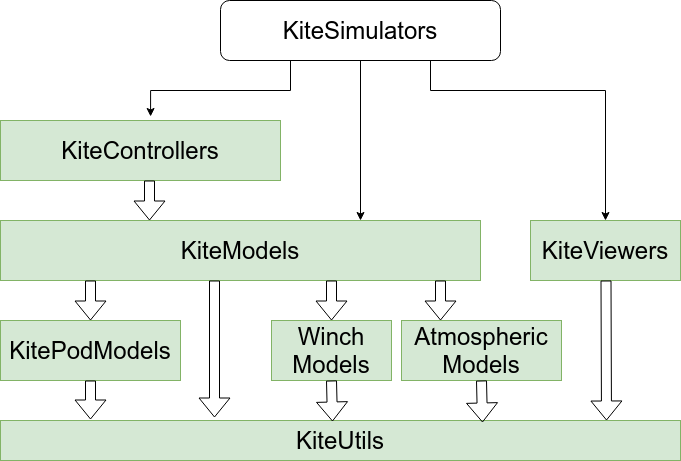

KiteModels
Documentation for the package KiteModels.
The model has the following subcomponents, implement in separate packages:
- AtmosphericModel from AtmosphericModels
- WinchModel from WinchModels
- KitePodModel from KitePodModels
This package is part of Julia Kite Power Tools, which consist of the following packages:

What to install
If you want to run simulations and see the results in 3D, please install the meta package KiteSimulators which contains all other packages. If you are not interested in 3D visualization or control you can just install this package. When you have installed the package KiteSimulators, use the command using KiteSimulators instead of using KiteModels when this is mentioned in the documentation.
Installation
Download Julia 1.10 or later, if you haven't already. You can add KiteModels from Julia's package manager, by typing
using Pkg
pkg"add KiteModels"at the Julia prompt. You can run the unit tests with the command:
pkg"test KiteModels"If you are using Windows, it is suggested to install git and bash, too. This is explained for example here: Julia on Windows .
Provides
The type AbstractKiteModel with the implementation KPS3 and KPS4, representing the one point and four point kite model, together with the high level simulation interface consisting of the functions init_sim! and next_step!. Other kite models can be added inside or outside of this package by implementing the non-generic methods required for an AbstractKiteModel.
Additional functions to provide inputs and outputs of the model on each time step. In particular the constructor SysState can be called once per time step to create a SysState struct for logging or for displaying the state in a viewer. Per time step the residual! function is called as many times as needed to find the solution at the end of the time step. The formulas are based on basic physics and aerodynamics and can be quite simple because a differential algebraic notation is used.

Further reading
These models are described in detail in Dynamic Model of a Pumping Kite Power System.
See also
- Research Fechner for the scientic background of this code
- The application KiteViewer
- the package KiteUtils
- the packages WinchModels and KitePodModels and AtmosphericModels
- the packages KiteControllers and KiteViewers
Author: Uwe Fechner (uwe.fechner.msc@gmail.com)